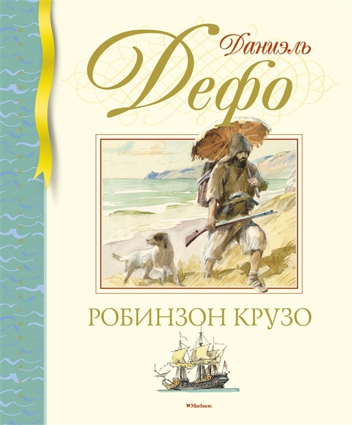

Жизнь и удивительные приключения морехода Робинзона Крузо
Автор:Даниэль Дефо
Жанр: роман

Описание книги:
Знаменитый роман английского писателя Даниэля Дефо (1660–1731) впервые был опубликован 300 лет назад. Но что удивительно, необыкновенные приключения Робинзона Крузо, волею случая оказавшегося на необитаемом острове, по-прежнему увлекают юных романтиков. Жизнь морехода полна испытаний и неожиданных событий, но он с честью и стойкостью преодолевает все трудности и невзгоды, выпавшие на его долю, и мужественно противостоит судьбе.